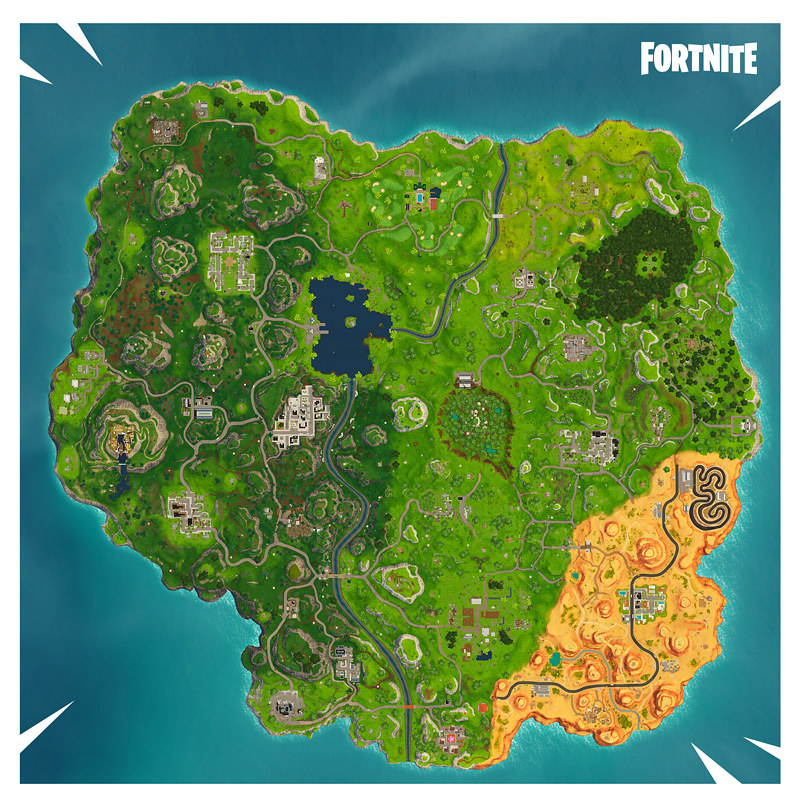
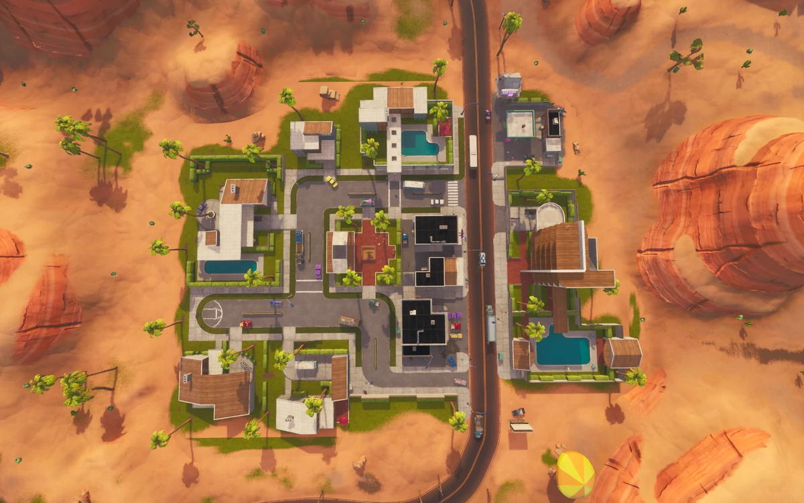
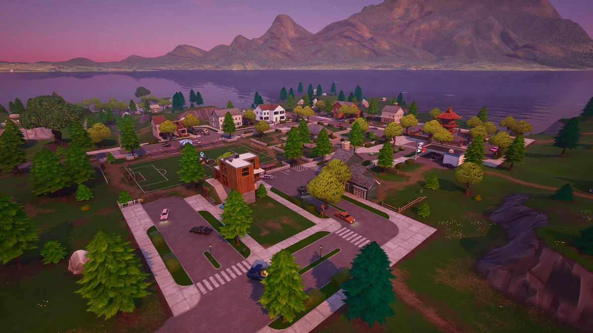
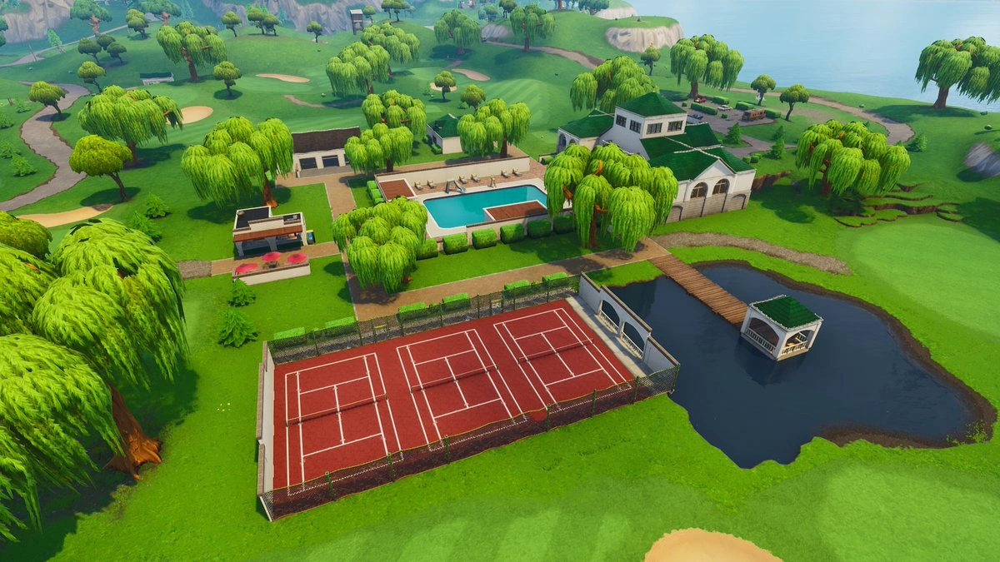
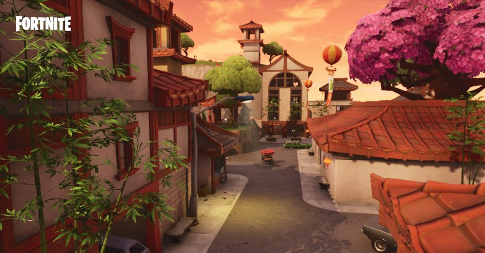

For a perfect getaway, look no further than the Fortnite Chapter 1 Season 5 map, an island paradise full of adventure. From the busy streets of Tilted Towers to the relaxing greens of Lazy Links, there is a destination for every type of traveler. Explore deserts, cities, mountains, and peaceful neighborhoods all on one island. Want to test your Fortnite knowledge?
Popular Youtuber and Streamer FlightReacts is a very skilled Fortnite player. He excels in perishing as well as
being carried by teammates.
He especially thrives in the art of being rebooted. To watch an educational video demonstrating FlightReacts
skills, click the link below.
FlightReacts

Paradise Palms is a beautiful desert resort filled with palm trees, hotels, and sunny skies. It's the perfect destination for travelers looking for warm weather, pools, and relaxing vacation vibes.

Tilted Towers is the most exciting destination on the island.
With tall buildings, rooftop views, and a lively city atmosphere,
it’s perfect for visitors who enjoy action and big city energy. This island is so cool, that a really cool battle
went down in the middle of the map! The battle of the century!
Watch it below.
Live Event

Pleasant Park offers a calm suburban getaway with a large park,
soccer field, and cozy homes. It's a great place for visitors who
want a peaceful and friendly neighborhood vacation.
Want to watch snowboarding?

Lazy Links is a luxurious golf resort surrounded by green hills
and scenic views. Travelers can enjoy relaxing walks, golf,
and a quiet countryside atmosphere.
Want to watch a drinking video?

Lucky Landing is a peaceful destination inspired by traditional Asian architecture. With colorful buildings and mountain views, it’s a great place to explore culture and enjoy a quiet retreat.